Getting Started
Before getting started this guide is to help you get an idea how to tank and to get over any possible tank anxiety.
This guide will only cover ARR as after finishing ARR you will have an idea of how to pull etc!
They Key
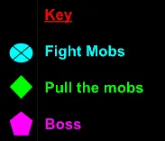
Sastasha
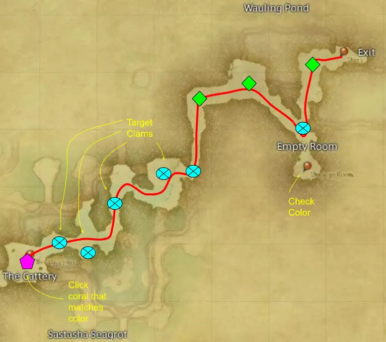 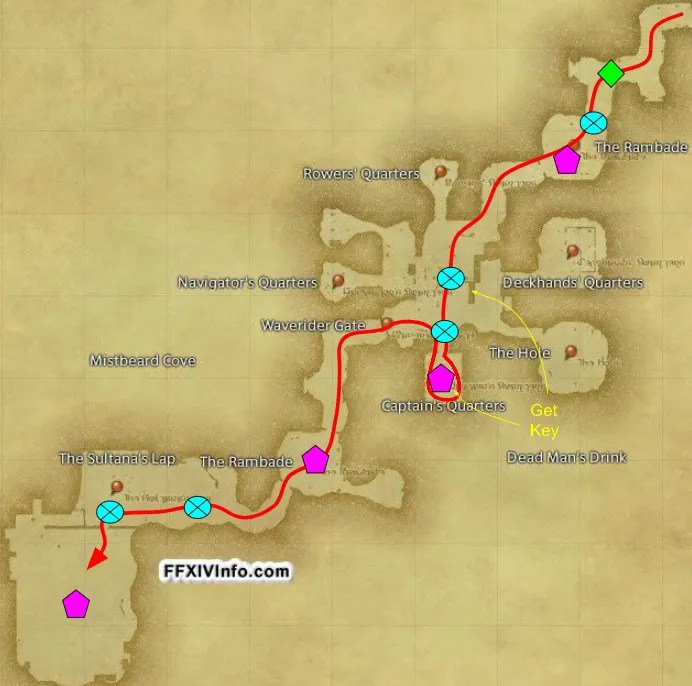
The Tam-Tara Deepcroft
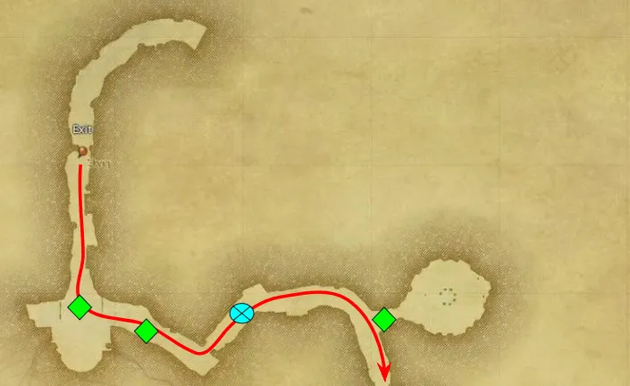 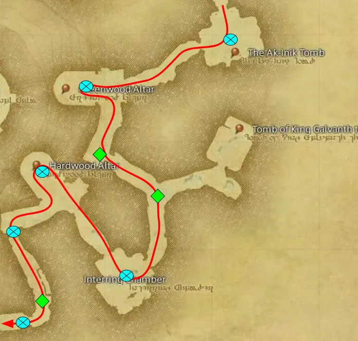 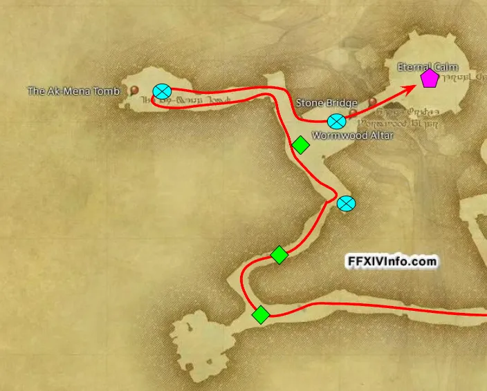
The Copperbell Mines
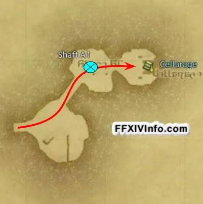 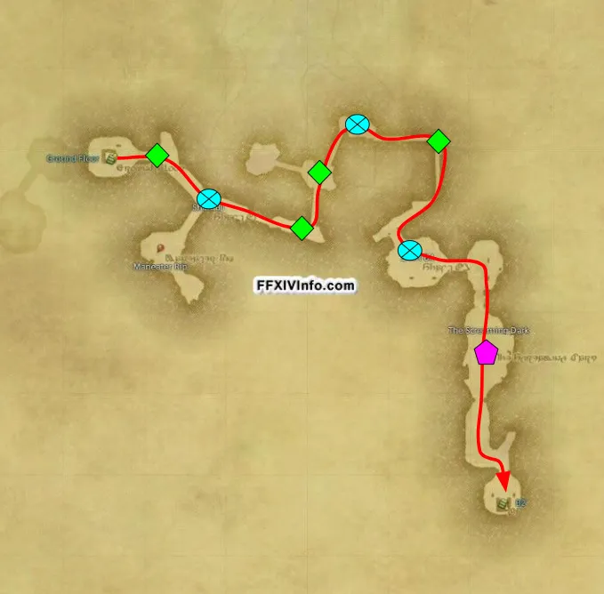 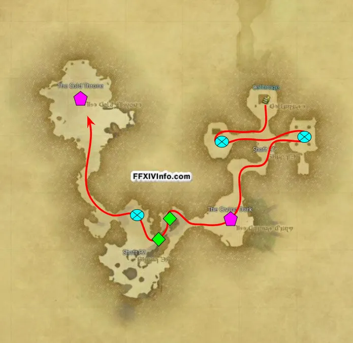
Halatalii
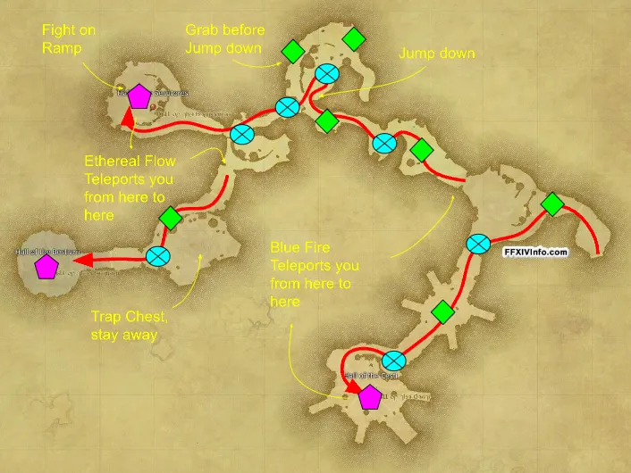
Haukke Manor
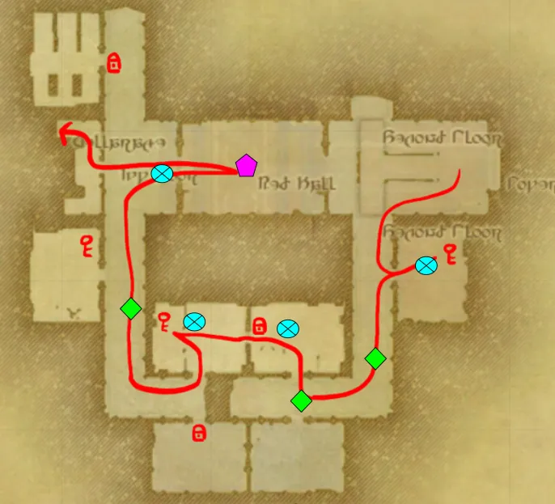 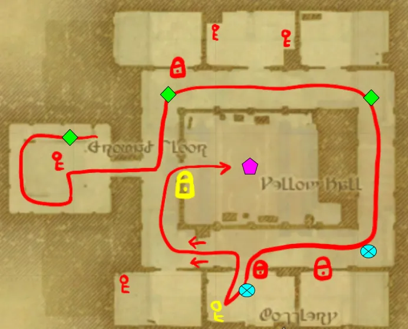 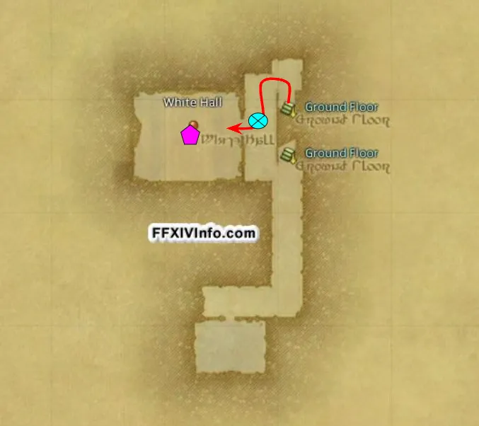
Brayflox's Longstopp
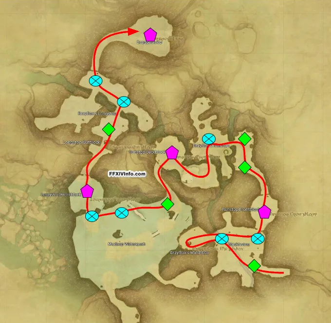
The Sunken Temple of Qarn
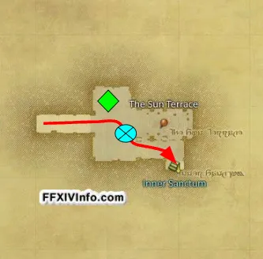 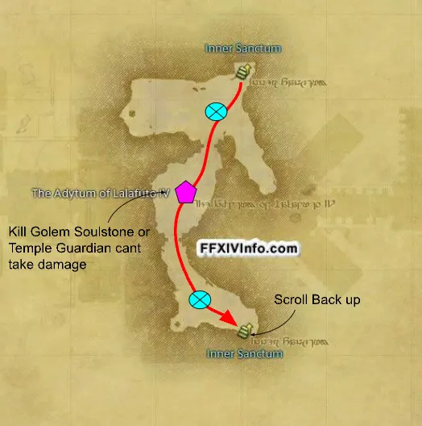
Cutter's Cry
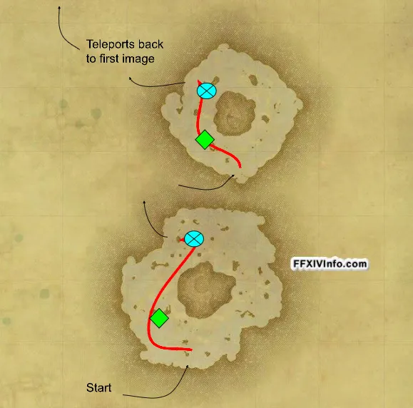 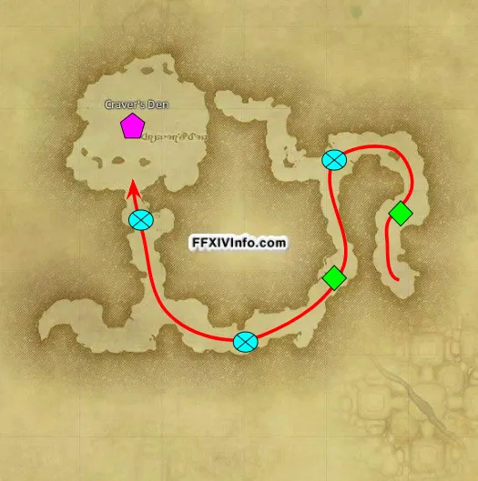
The Stone Vigil
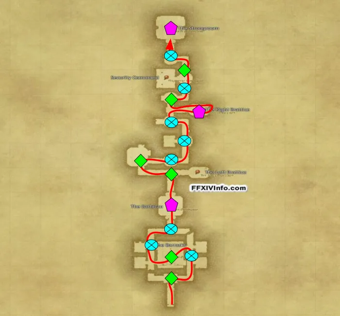
Castrum Merdianum